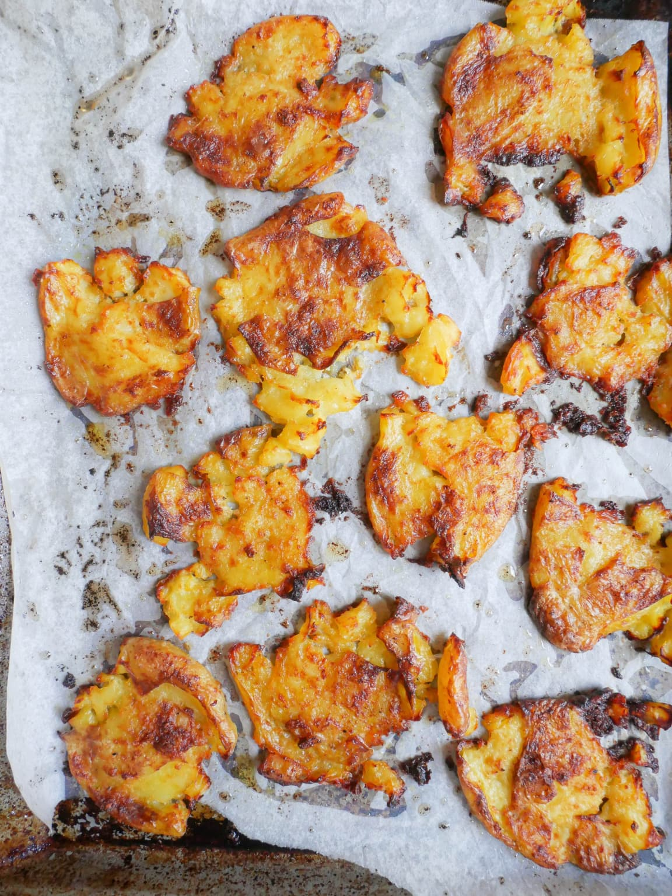

Garlic Butter Crispy Potatoes Recipe

Description
These potatoes taste exactly like garlic bread but in potato form. They
are buttery, have subtle notes of garlic and are crispy and crunchy on the
outside while fluffy on the inside. These smashed potatoes are the
absolute best and crispiest.
Ingredients
- 1.5kg baby white potatoes
- 1 head garlic
- 100g Westgold salted butter
- 2 tablespoons olive oil
- salt
- pepper (to taste)
- parsley (finely diced, to serve)
Steps
- Preheat the oven to 200 degrees celsius.
-
Cut the top off the head of the garlic and place into a small oven proof
pot with a lid or into a sheet of foil. Drizzle with olive oil and
season with a pinch of salt and pepper. Cover and bake for 1 hour. Allow
to slightly cool and squeeze the garlic cloves out of their skin. Set to
the side.
-
Place the potatoes into a large pot and cover with heavily salted cold
water. On a high heat, cook for 30 - 40 minutes or until they are tender
enough for a skewer to be poked through the middle. Start your timer as
soon as you place the potatoes onto the stove and not when the water is
brought to a boil.
-
Drain the potatoes into a colander and place into the fridge to allow
for all the moisture to evaporate. Alternatively, you can pat them dry
with a paper towel but it is extremely important they are dry and there
is no remaining moisture.
-
In a deep dish tray on a low heat, combine the butter and olive oil and
cook until melted. Add the roasted garlic and a pinch of salt and pepper
and cook for 2 minutes or until all are well combined. Take off the heat
and toss the potatoes through the butter sauce.
-
Line two baking trays with baking paper and evenly distribute the
potatoes across them, leaving lots of space around each potato. Using a
glass or potato masher, press down onto the potatoes while still keeping
them intact. Depending on your preference, you can smash them quite thin
which will give you a crisper potato or smash them only slightly that
will result in a fluffier inside. Both are delicious!
-
Drizzle the potatoes with the remaining butter sauce and bake for 40
minutes at 200 degrees celsius.
-
Sprinkle with some flakey sea salt and finely chopped parsley and serve
immediately.
Sources